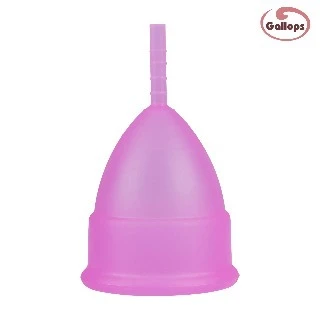
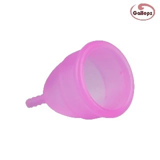

Menstrual Cups: A Smarter Choice
Choosing the right period-care product can make a meaningful difference. Learn why more women are switching.
Insights, guides, and tips for a more comfortable and conscious period care routine.

Choosing the right period-care product can make a meaningful difference. Learn why more women are switching.

If you have never used a menstrual cup before, read this step-by-step guide to get started comfortably.
Understand the differences between menstrual cups and disposable pads to decide what works for your lifestyle.
Proper cleaning and storage can help maintain your cup and support hygienic use throughout your cycle.
Can it get lost? Can I sleep wearing one? We answer the most common concerns for first-time users.
Modern period care is about comfort, convenience, and reducing unnecessary waste. See the long-term value.
Trying a menstrual cup for the first time? Knowing what to expect can make your first experience better.